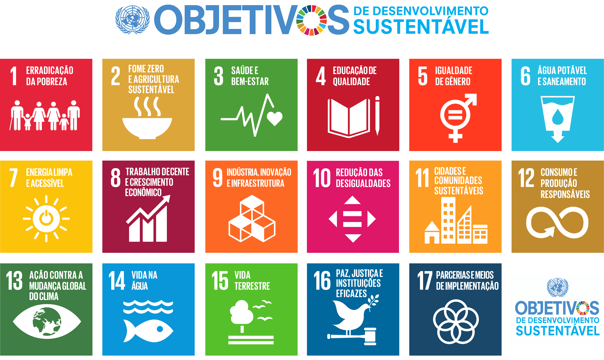

O TCC do IEMA é composto por três dimensões: Objetivos de Desenvolvimento Sustentável (ODS) das Nações Unidas, Inovação e Empreendedorismo. E busca a solução de um problema real, certo? Mas antes, cabe perguntar: O que são os Objetivos de Desenvolvimento Sustentável (ODS)? Quais são os ODS?
A ONU nos diz que “Os ODS são um apelo global à ação para acabar com a pobreza, proteger o meio ambiente e o clima e garantir que as pessoas, em todos os lugares, possam desfrutar de paz e de prosperidade” (ONU, 2022). Assim, a pobreza, o meio ambiente e o clima são exemplos de males que atingem o mundo todo. Portanto, é necessário buscar soluções para esses problemas agora! Não é possível deixar para depois. E quais são os ODS? Abaixo, segue o infográfico dos 17 ODS.
A seguir, vamos apresentar cada um destes ODS, sendo que é importante que você faça novas pesquisas para detalhar cada um destes objetivos. Cada ODS tem sua meta e indicador. Assim, os 17 ODS são formados por 169 metas e 232 indicadores. Quadro 1 – Dimensões dos ODS.
| ELEMENTO | DIMENSÃO | ODS |
|---|---|---|
| Pessoas | Social | ODS 1 – Erradicação da pobreza: acabar com a pobreza em todas as suas formas e em todos os lugares. |
| ODS 2 – Fome zero e agricultura sustentável: acabar com a fome, alcançar a segurança alimentar e melhoria da nutrição e promover a agricultura sustentável. | ||
| ODS 3 – Saúde e bem-estar: assegurar uma vida saudável e promover o bem-estar para todos e em todas as idades. | ||
| ODS 4 – Educação de qualidade: assegurar a educação inclusiva, equitativa e de qualidade e promover oportunidades de aprendizagem ao longo da vida para todos. | ||
| ODS 5 – Igualdade de gênero: alcançar a igualdade de gênero e empoderar todas as mulheres e meninas. | ||
| ODS 6 – Água potável e saneamento: garantir disponibilidade e manejo sustentável da água e saneamento para todos. | ||
| ODS 7 – Energia limpa e acessível: garantir acesso à energia barata, confiável, sustentável e renovável para todos. | ||
| ODS 11 – Cidades e comunidades sustentáveis: tornar as cidades e os assentamentos humanos inclusivos, seguros, resilientes e sustentáveis. | ||
| Planeta | Ambiental | ODS 12 – Consumo e produção responsáveis: assegurar padrões de produção e de consumo sustentáveis. |
| ODS 13 – Ação contra a mudança global do clima: tomar medidas urgentes para combater a mudança climática e seus impactos. | ||
| ODS 14 – Vida na água: conservação e uso sustentável dos oceanos, dos mares e dos recursos marinhos para o desenvolvimento sustentável. | ||
| ODS 15 – Vida terrestre: proteger, recuperar e promover o uso sustentável dos ecossistemas terrestres, gerir de forma sustentável as florestas, combater a desertificação, deter e reverter a degradação da Terra e deter a perda da biodiversidade. | ||
| Paz | Política Institucional | ODS 16 – Paz, justiça e instituições eficazes: promover sociedades pacíficas e inclusivas para o desenvolvimento sustentável, proporcionar o acesso à justiça para todos e construir instituições eficazes, responsáveis e inclusivas em todos os níveis. |
| Parceria | ODS 17 – Parcerias e meios de implementação: fortalecer os meios de implementação e revitalizar a parceria global para o desenvolvimento sustentável. |
Esses ODS irão ajudar o estudante a identificar um problema em sua comunidade, ou caso o estudante já saiba qual é o problema da sua comunidade, bastará relacioná-lo aos ODS. Assim o professor deverá promover discussões, seminários sobre estes objetivos. O professor poderá indagar: Quais as causas da falta de água potável? Como proteger a vida marinha? Quais são as causas e impactos da mudança climática? Conhecer as causas dos problemas irá ajudar na solução.
E COMO SOLUCIONAR O PROBLEMA? Vamos tratar na próxima página.
Home